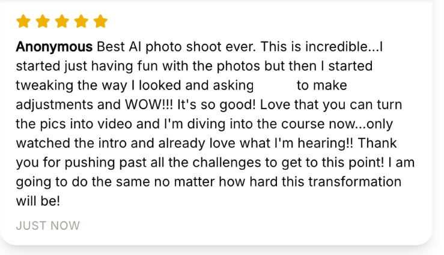
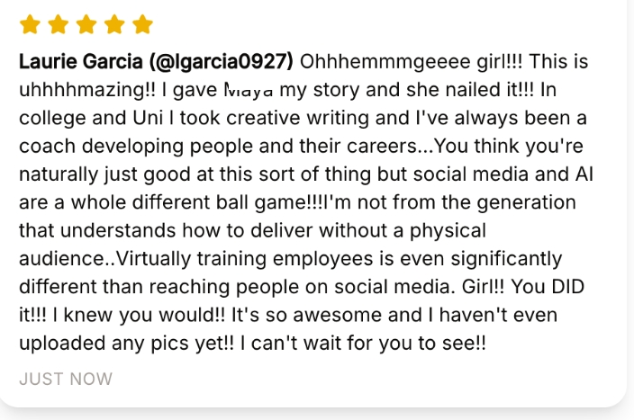
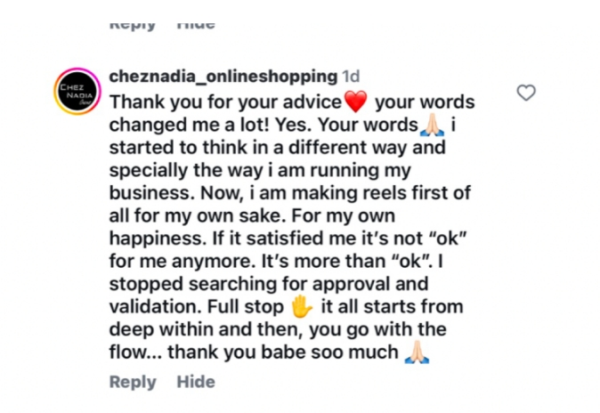
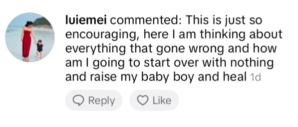
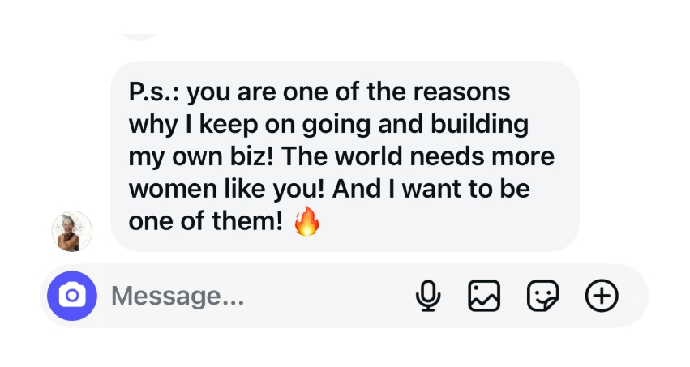
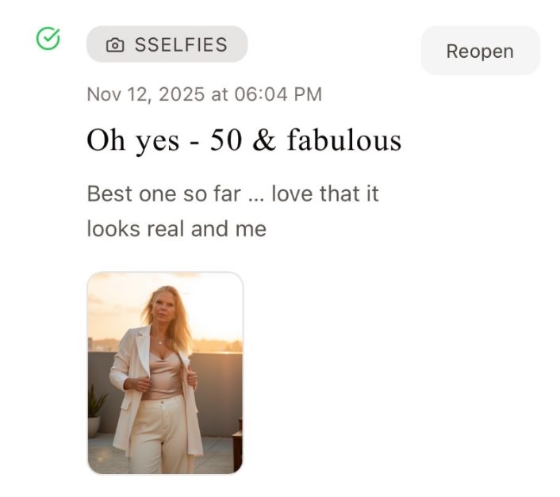

Sound like you?
- You've got a business, a service, or something you're building, and you know you should be showing up more.
- You post in bursts, then disappear for weeks because you overthink every caption.
- You're tired of "content tips" that don't actually get you to hit publish.
- You want a simple system, not one more thing to feel behind on.
What the five days look like
This is a live experience. You'll be creating alongside Sandra, not just watching.
-
01
The old way is already over.
Why waiting for perfect photos, perfect confidence and a personality made for social media was never the answer.
-
02
Watch the method happen.
Not another promise. See the process turn what you already have into real content, in real time.
-
03
Even if you hate cameras.
You don't need to become an influencer to be seen. This works without daily video.
-
04
See the actual result, not just a promise.
Leave with something real in your own hands, not more notes to file away.
-
05
Build it live, then decide what's next.
Apply everything live, create something for yourself, no pressure to decide anything before you're ready.
Why I'm doing this live, for free
"I built my first audience from my phone, alone, figuring it out as I went. This series is me doing that with you, live, for free, because I remember exactly how stuck it feels to have something to say and no idea how to say it."
Save your spot
The Show Up Everyday Series · October 4–11, 2026 · 7PM CEST (UTC+2) · Live on Whop






Frequently asked questions
What if I can't make it live?
This is designed to be lived, not watched later. There's no replay, so the 5 days are the days to actually show up.
Is this really free?
Yes. Completely free, no card, no catch.
Do I need any tech skills?
No. If you can join a video call and open your phone's camera roll, you have everything you need.
What happens after the 5 days?
You'll have a real week of content built, and a simpler way to keep going. If there's more support worth telling you about after that, I'll tell you then, not before.
Will there be a replay?
No. It's imperative that you show up live, that's the whole point of the series.
Five days. Live with Sandra.
Stop overthinking what to post and start showing up as yourself, consistently, not perfectly.